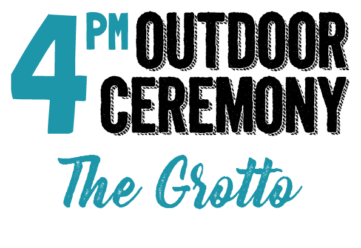
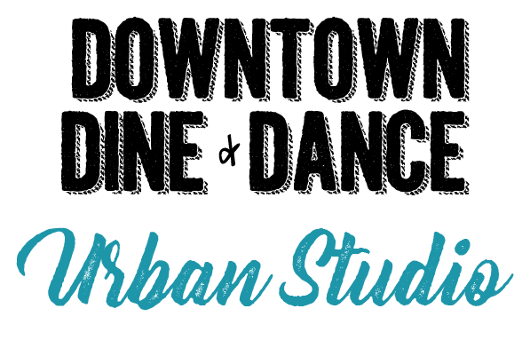

8840 NE Skidmore St.
The ceremony will be taking place in NE Portland at a beautiful outdoor Roman Catholic outdoor shrine and sanctuary.
About 30 minutes from the Perl District.
Off-street parking is avialable.

The ceremony will be taking place in NE Portland at a beautiful outdoor Roman Catholic outdoor shrine and sanctuary.
About 30 minutes from the Perl District.
Off-street parking is avialable.

935 NW Davis St.
The reception will follow the ceremony and is located in a popular downtown district. We advise parking your car for the evening before heading to Urban Studio.

The reception will follow the ceremony and is located in a popular downtown district. We advise parking your car for the evening before heading to Urban Studio.